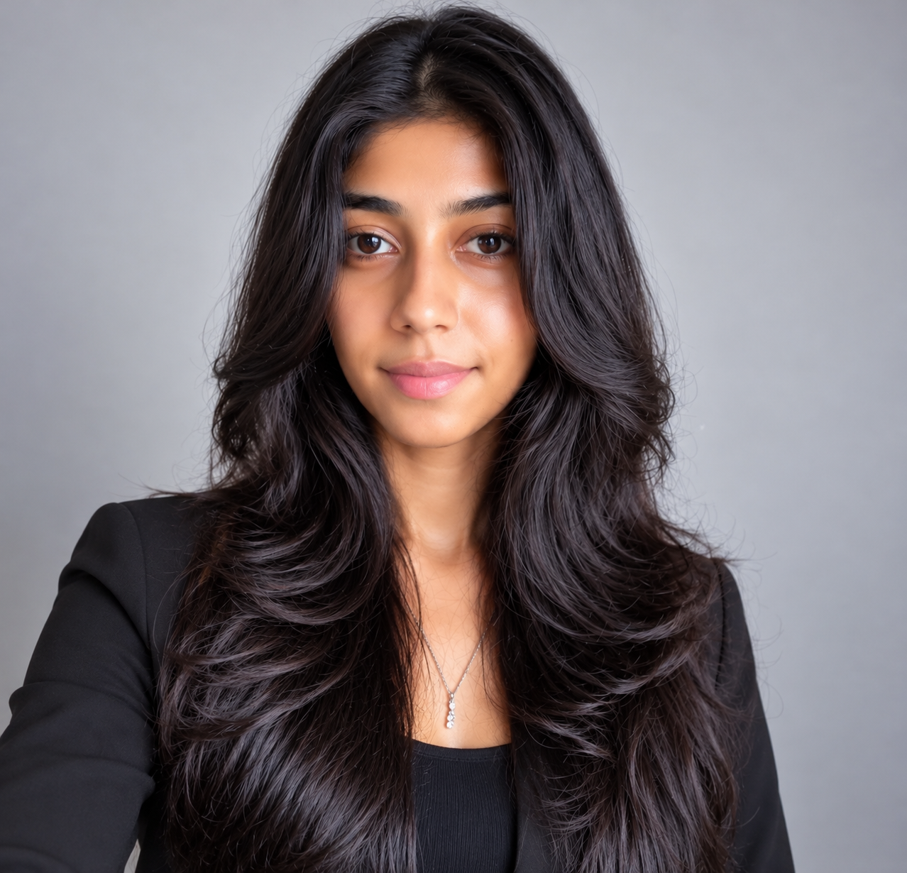

What I bring
Responsive web design · Custom WordPress development · Debugging · Website maintenance · Client communication · Remote teamwork
I'm Yudhangi Hettige, a web developer with 7+ years of IT experience creating responsive websites, custom WordPress solutions, and practical web applications for clients across remote teams.

I bring experience in website design, development, maintenance, troubleshooting, and client collaboration. My work spans responsive front-end interfaces, custom WordPress themes and plugins, website optimization, and dynamic web applications.
I've worked remotely with US- and UK-based teams, managed freelance client projects, and supported IT education and web content initiatives in Sri Lanka.
Responsive web design · Custom WordPress development · Debugging · Website maintenance · Client communication · Remote teamwork
Understand the client's goals, build accessible and user-friendly experiences, test carefully, and deliver maintainable solutions.
Tools and competencies highlighted in my professional resume.
HTML · CSS · JavaScript · Python · Java · Responsive websites · Front-end development
WordPress · Custom themes · Custom plugins · UI/UX · Visual design · Cross-browser testing
Website maintenance · Troubleshooting · Performance optimization · Search visibility · Client consultation · Remote collaboration
These summaries describe work documented in my resume. Individual case studies, screenshots, and public project links can be added once confirmed.
Developed and maintained WordPress websites, including custom themes and plugins, with a focus on brand alignment, performance, and usability.
Kay Business Solutions · Freelance
Designed and developed user-centered websites with HTML, CSS, and JavaScript, supporting usability, testing, and cross-browser compatibility.
Cmak Solutions · Freelance
Maintained an institute website, updated course and event content, and helped provide online learning resources and technical support.
Nenasala IT Institute
Create tasks, organize priorities, and track progress in a responsive browser-based application.
Browse and filter products, manage a shopping cart, and explore a simulated checkout experience.
Live city weather, five-day forecasts, and temperature charts powered by Open-Meteo.
My career spans web development, freelance client delivery, web design, and IT course coordination.
Kay Business Solutions · Texas, USA
January 2022 – present (as listed in supplied resume)
Responsive websites, WordPress customization, programming, optimization, client collaboration, and troubleshooting.
Self-employed · October 2020 – January 2022
End-to-end website design and development, WordPress customization, client consultation, testing, and maintenance.
Cmak Solutions · London
Designed user-centered websites and collaborated on front-end and WordPress integration. Employment dates can be confirmed before publication.
Nenasala IT Institute · Matara, Sri Lanka
Coordinated IT courses, maintained web content, and supported online educational resources.
Shyn Soft Solutions · Colombo, Sri Lanka
Contributed to website development, maintenance, and front-end programming projects.
Diploma in Information Technology
ICBT, Matara · 2014
Python Full Stack Developer Course
University of Moratuwa, Sri Lanka · December 2022
Interested in collaborating on web development, WordPress projects, or remote technical work? Get in touch.
Email: kaytx95@gmail.com · Social profiles can be added when verified.